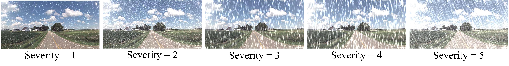

Abstract
Cross-view geo-localization serves as a viable alternative to providing geographical location information when GPS signals are unstable or unavailable by matching ground images with geo-tagged aerial image databases. While significant progress has been made on some common benchmarks like CVUSA and CVACT, there remains a lack of comprehensive consideration for robustness against real-world environmental challenges such as adverse weather or sensor noise. This deficiency poses a significant challenge for deploying this technology in safety-critical domains like autonomous driving and robot navigation. To the best of our knowledge, there is currently no specialized benchmark for evaluating the robustness of cross-view geo-localization. To comprehensively and fairly evaluate the robustness of cross-view geo-localization models in real-world scenarios, we introduce 16 common types of data corruption. By synthesizing these corruptions on public datasets, we establish two fine-grained corruption robustness benchmarks (CVUSA-C and CVACT_val-C) and three comprehensive corruption robustness benchmarks (CVUSA-C-ALL, CVACT_val-C-ALL, and CVACT_test-C-ALL), covering approximately 1.5 million corrupted images. Subsequently, we conduct large-scale experiments on various cross-view geo-localization models to evaluate their robustness in corrupted environments and derive novel insights. Finally, we explore two data augmentation strategies as potential solutions to enhance model robustness. Combined with the training strategies proposed, these approaches effectively enhance the robustness of multiple models.
Motivation
Corrupted Images
16 Corruption Types

5 Severity Levels
Robustness Enhancement Methods
Details of Our Benchmarks
Benchmarking Results
Fine-grained Corruption Robustness Benchmarking Results
Comprehensive Corruption Robustness Benchmarking Results
Robustness Enhancement Results